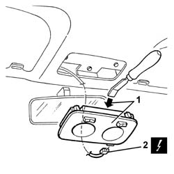
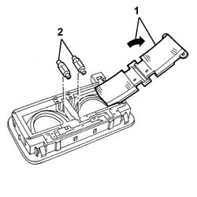

7040E40 MODULAR FRONT COURTESY LIGHT - R R
- Path
- Procedures > 70 FITTINGS > 7040 BODYSHELL INTERIOR TRIMS AND FITTINGS > 7040E INTERIOR COURTESY LIGHT SYSTEM > 7040E40 MODULAR FRONT COURTESY LIGHT - R R
- Kind
- repair procedure (removal / refitting; the operation number is the code)
- Applies to
- all engines; all production periods
- Interactive page
- https://sloeber94.github.io/elrnDB-aGt/en/#/125001873
Applies to: all engines; all production periods
 Removing
Removing
 Refitting
Refitting1. Remove the courtesy light from the retainers, pressing on the side indicated.
2. Gently move aside the courtesy light unit and disconnect the electrical connection.
Name | Connector | |
|---|---|---|
2 | Front courtesy light | See G10 FRONT COURTESY LIGHT ( REAR ) |

Applies to: all engines; all production periods
1. If necessary, prise off and open the cover.
2. Withdraw the bulbs from the retainers.

Applies to: all engines; all production periods
Refitting
RemovingCheck that the courtesy light is undamaged.
If removed, fit the bulbs in the retainers.
Close and engage the cover.
Connect the electrical connection.
Fit the courtesy light and engage the retainers.
Check the operation of the courtesy light.
Topics that link to this page (6)
- I50 INTERIOR LIGHTS NOT WORKING / UNDER NO CIRCUMSTANCES
- I56 INTERIOR LIGHTS NOT WORKING WITH KEY EXTRACTED FROM THE IGNITION
- I57 INTERIOR LIGHTS NOT WORKING WITH DOORS UNLOCKED BY REMOTE CONTROL
- I58 INTERIOR LIGHTS DO NOT GO OFF AT KEY-ON
- I59 INTERIOR LIGHTS DO NOT GO OFF/COME ON GRADUALLY
- 7040E50 FRONT MODULAR COURTESY LIGHT UNIT - R+R